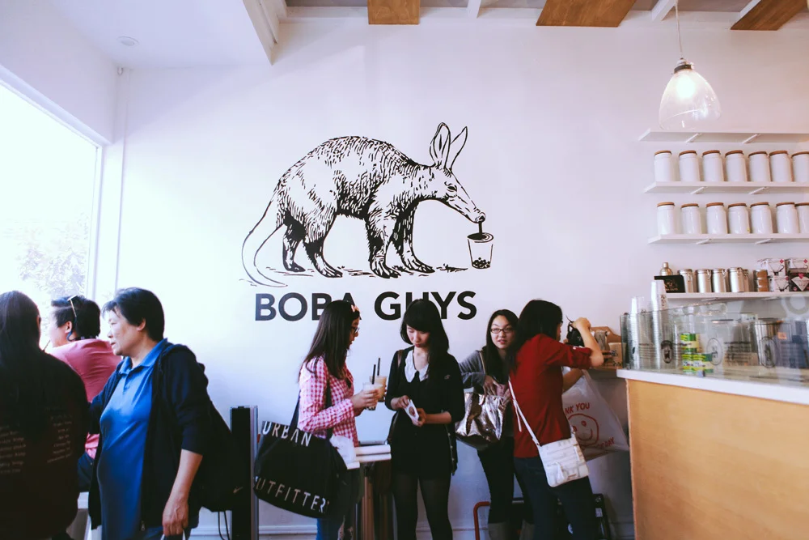

boba/bubble tea (珍珠奶茶) is a drink that combines milk tea with tapioca pearls. traditionally, it is a black tea-based drink with milk, paired with chewy tapioca pearls. originating from Taiwan, it has become a favorite around the world. while it's more of a dessert drink than a regular cup of tea, there is no doubt that the rising popularity of the boba tea has made it widely enjoyed globally.
What differentiates these shops from each other is branding, drink quality, and sourced ingredients. now many shops are jumping on flavor trends, and more and more varieties of the drink attract new customers every day. well-known shops have become social and cultural hubs for young adults, and social media and creative marketing have helped these drinks gain popularity. together, these trends show how boba tea has grown into a widely enjoyed and culturally relevant phenomenon.
.png)

The boba scene in San Francisco is vast, with stores offering a wide variety of drinks. Popular chains include YiFang, HeyTea, ChichaSanChen, and iTea. There are also many family-owned boba businesses throughout the city. From classic milk teas to inventive seasonal flavors, each shop brings something special to the table.